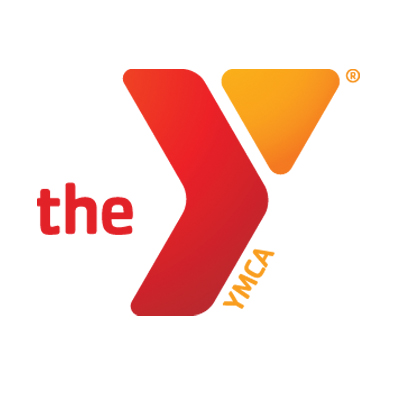

ABOUT US
Capital Community (formerly known as Austin Microfinance Group) is a 501(c)3 non-profit and UT organization that conducts basic personal finance lessons for individuals in underserved areas in Austin and holds informational events to increase awareness of predatory lending. We believe that the most effective way to ensure long-term financial responsibility is through education.
The organization strives on three distinct pillars: lesson creation, sustainable partnerships, and volunteering. Our members dedicate time to creating informative lesson plans and workshops for young students and adults. In addition, we develop partnerships with local Austin schools and non-profits in order to facilitate our volunteering activities.
Lesson Creation
Partnerships
Volunteering
PARTNERSHIPS
We teach at the following locations:
Texas ACE:
Cedars International Academy, Eden Park Academy

YMCA:
Silver Spring, Forest Park, Heights on Congress, Villas of Sixth
OFFICERS
Rohan Shah
President & Co-Founder
Danyal Rivzi
Senior Advisor
Muhammad Ghauri
Director of Operations
Jack Chang
Director of Curriculum Development (Elementary)
Kenny Young
Director for Curriculum Development (Middle)
Neo Nanna
Director for Curriculum Development (Adult)
Avanti Vyza
Director of Events and Recruiting
John Weng
Director of Nonprofit Partnerships
Matthew Zhao
Director of Corporate Partnerships
officers
ALUMNI
Christina Kent '15
Co-Founder, President, Board Director
Trader at
TransMarket Group
Suraj Bhuva
Co-Founder
Economics PhD Student
at Stanford University
Jamal Deek '15
Director of Operations, Board Director
Investment Banking Analyst
at Cain Brothers
Jamie Roh '14
Director of Marketing
Investment Banking Analyst
at Goldman Sachs